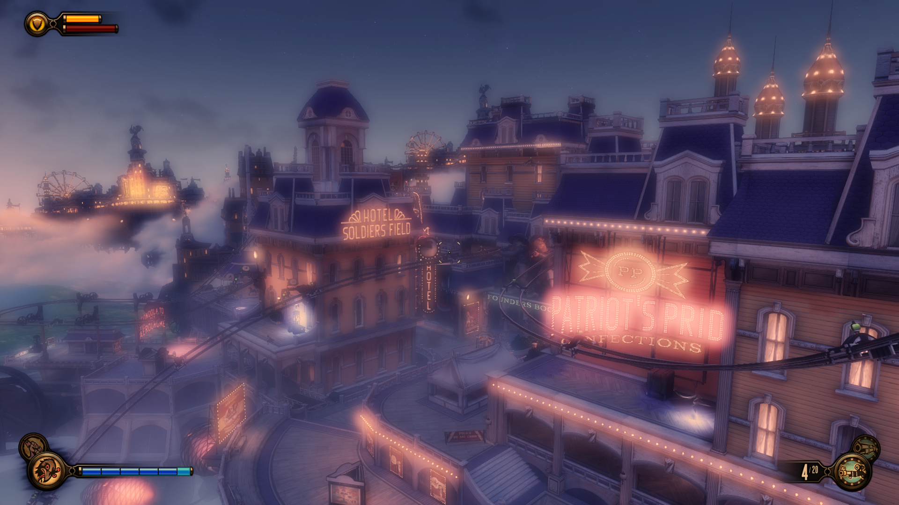
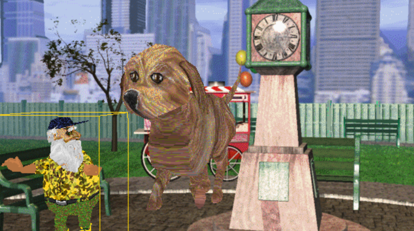

In my last article about The Witness, I described its aesthetic as 'bloomy'. Which, if you're into game design you might get, but I almost put a footnote next to that word to explain it for anyone who didn't know what it was.
But that broke up the flow of the sentence, so instead I just left it there. Today while I was wondering what to write about, I just thought, I should write about bloom.
I love it.

Bloom is a graphics effect that mimics a real-world camera effect.[1] Basically, it makes the light in an image 'fuzzy'.
I don't have a lot to say about it. It's been used extensively in video games. I like it, I think it adds a lot of aesthetic value.
One of the first games with bloom was actually Riven, the sequel to the original Myst!
In 2004, the creators of Tron 2 published a very influential article about bloom. The article was called 'Real-Time Glow'.[2]
They noticed how making things glow made computer graphics look less shit. Normally, videogame graphics looked very 'flat.'
Allow me to present an example of what they were talking about.

Compare the two pictures and you understand the idea.
Bloom is nice.
It makes good games gooder and bad games at least not look so shit.
Everyone agrees with me on this.
Greg James and John O'Rorke of the aforementioned Real-Time Glow article noticed that games like the original Splinter Cell and Halo 2 used bloom, as well in Pixar's filmmaking.
“Another notable and widespread use of glow can be seen in Pixar's film Finding Nemo, where glows convey the murkiness of seawater and help to set the mood for various scenes." — Greg James and John O'Rorke, Real-Time Glow (May 26, 2004)
Greg and John called it glow, and another name for it is "light bloom". According to Wikipedia, the technique wasn't widely used until the publishing of the 2004 article, which led to an explosion in bloom.
Games such as Ico used it before, but the kind of bloom you get in Bioshock Infinite is probably due in part to this article's publishing. Which is good, because I think bloom is beautiful.
People get this, and they agree with me.
(Also there is a thing called reticle bloom, when the UI reticle of a gun in an FPS sort of explodes each time you shoot to represent the diminishing accuracy of each shot as you fire in rapid succession.)